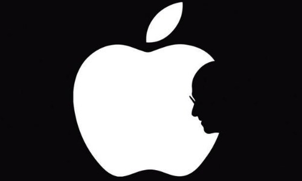

O que é um Web Designer?
Web Design é uma área ampla e que reflete nas definições sobre o que é um Web Designer. Basicamente, é o
profissional que planeja, desenvolve e realiza manutenção em sites e aplicações para Internet. O mesmo deve
ser capaz de fazer o levantamento dos requisitos, elaborar o projeto estético e funcional e então realizar o
desenvolvimento. Podemos separar o profissional em duas áreas de atuação (muitos atuam nas duas): Design
gráfico que engloba a elaboração do layout das páginas, usabilidade, disposição dos textos, imagens, banners
e afins; e Desenvolvimento Web englobando o desenvolvimento de lógicas, interfaces e funcionalidades para
atender às necessidades do cliente.
Esse minicurso abordará alguns tópicos básicos da área.
Abaixo seguem alguns links para acesso ao conteúdo do curso.
Cores
A cor é poderosa. Ela influencia não só como as pessoas se sentem, mas o que elas fazem. O estudo dessa área
começou com Johann Wolfgang von Goethe, poeta nascido em 1749 na alemanha e depois aperfeiçoado pela
socióloga, também alemã, Eva Heller.
Heller fez diversas pesquisas com grupos variados de pessoas e acabou por descobrir padrões mentais nas
pessoas quando se trata de cores.
A psicologia da cor pode ajudar a fortalecer sua marca, incentivar as
vendas, e até mesmo orientar os visitantes em direção a páginas ou ações específicas em seu site.
Abaixo deixarei um pequeno conjunto de tópicos associado a cada cor:
- Vermelho: raiva, paixão, fúria, ira, desejo, excitação, energia, velocidade, força, poder, calor, amor,
agressão, perigo, fogo, sangue, guerra, violência
- Rosa: amor, inocência, saúde, felicidade, satisfação, romantismo, charme, brincadeira, leveza,
delicadeza
- Amarelo: sabedoria, conhecimento, relaxamento, alegria, felicidade, otimismo, idealismo, imaginação,
esperança, claridade, radiosidade, verão, desonestidade, covardia, traição, inveja, cobiça, engano,
doença, perigo
- Laranja: humor, energia, equilíbrio, calor, entusiasmo, vibração, expansão, extravagância, excessivo,
flamejante
- Verde: cura, calma, perseverança, tenacidade, autoconsciência, orgulho, imutabilidade natureza, meio
ambiente, saudável, boa sorte, renovação, juventude, vigor, Primavera, generosidade, fertilidade, ciúme,
inexperiência, inveja, imaturidade, destruição
- Azul: fé, espiritualidade, contentamento, lealdade, paz, tranquilidade, calma, estabilidade, harmonia,
unidade, confiança, verdade, confiança, conservadorismo, segurança, limpeza, ordem, céu, água, frio,
tecnologia, depressão
- Roxo/Violeta: erotismo, realeza, nobreza, espiritualidade, cerimônia, misterioso, transformação,
sabedoria, conhecimento, iluminação, crueldade, arrogância, luto, poder, sensibilidade, intimidade
- Marrom: materialismo, excitação, terra, casa, ar livre, confiabilidade, conforto, resistência,
estabilidade, simplicidade
- Preto: não, poder, sexualidade, sofisticação, formalidade, elegância, riqueza, mistério, medo,
anonimato, infelicidade, profundidade, estilo, mal, tristeza, remorso, raiva
- Branco: sim, proteção, amor, respeito, mesura, pureza, simplicidade, limpeza, paz, humildade, precisão,
inocência, juventude, nascimento, inverno, neve, bom, esterilidade, casamento (culturas ocidentais),
morte (culturas orientais), frio, clínico, estéril
- Prata: riqueza, glamour, fascínio, diferença, natural, liso, suave, macio, elegante, tecnológico
- Ouro: preciosidade, riqueza, extravagância, calor, riqueza, opulência, prosperidade, grandeza
Sendo assim, é importante escolher quais cores usar, e também como harmonizá-las. Para isso utilizamos o
círculo cromático:
Nele estão representados as cores primárias, suas combinações e os intermediários entre cada uma
delas.
Partindo deste círculo, conseguimos estabelecer relações entre cores que são naturalmente
harmonizantes:
Complementares
Cores complementares (conhecidas também como suplementares ou de contraste), são tons que estão em lados opostos uns aos outros no círculo cromático.
Esse esquema de combinações funciona muito bem quando você quer que as cores criem um efeito de vida, energia e principalmente quando você quer alcançar o máximo de saturação.
Análogas
Utilizando esse esquema você pode combinas de 2 até 5 cores (porém o ideal é utlizar apenas de 2 até 3), que são adjacentes umas as outras. Isso cria uma impressão de calma e simpatia.
Triangulação
Está é uma combinação de três cores que estão equidistantes uma das outras dentro do círculo, produzindo um efeito de alto contraste, porém sem perder a harmonia. Esse tipo de composição cria uma sensação “vibrante” mesmo quando utilizado cores claras e sem saturação.
Meio Complementares
Está é uma variação da combinação de cores complementares. Neste caso, você escolhe uma cor primária e duas cores complementares (tons que se encontram os dois diametralmente opostos a cor primária). O efeito criado por esse esquema tem mais contraste, porém é um pouco menos intenso.
Retângulo
Neste caso basta utilizar uma cor primária e duas cores complementares, além de uma cor adicional que acentua as demais.
Quadrado
Utilizando uma combinação de 4 cores equidistantes uma das outras, neste caso os tons diferem uma das outras, mas também são complementares. Isso cria um efeito de dinâmica, vividez e “diversão”.
O Círculo cromático pode ser facilmente acessado em aplicativos voltados ao design e produção gráfica, como Photoshop e Illustrator, mas a Adobe disponibiliza um online e gratuíto para ser usado que já conta com várias das combinações citadas aqui!
Adobe Colorwheel
Além disso, existem algumas outras ferramentas, nem sempre precisamos ficar presos ao círculo cromático, podemos criar paletas baseadas em uma cor e ir buscando acentuações em suas sombras ou outras cores harmonizantes. Para isso, gosto muito de usar o site Coolors que ajuda na geração de paletas.
Por fim, vale lembrar que cores são sim importantes e podem despertar emoções no ser humano, porém é importante ressaltar que não podemos basear um layout inteiramente nelas e mais ainda, não podemos deixar de pensar na acessibilidade quando falamos neste quesito, por isso sempre que possível deve existir a combinação de cor e forma.
Existem alguns sites que auxiliam esta parte da acessibilidade como o Colorblind Web Page Filter que permite visualizar um site de acordo com um dos tipos de daltonismo.
voltar ao topo
Tipografia
Hoje em dia a tipografia é conhecida por ser uma ferramenta essencial do design gráfico, e tem extrema
importância na construção do seu branding. Atualmente, Tipografia é o nome dado ao estudo, criação e
aplicação de caracteres, estilos, formatos e disposição visual de palavras.
Um bom estudo de tipografia é capaz de representar, graficamente, valores e posicionamento da empresa,
além de despertar sentimentos e percepções do público.
Como aqui estamos focando em sites e apps, temos algumas convenções a serem seguidas:
- Comumente usamos o máximo de duas fontes para construir a identidade gráfica de um produto, sendo
uma para títulos e destaques e outra para textos, como parágrafos e conteúdos.
- O HTML possibilita a criação de uma hierarquia e tematização com as tags p, h1, h2, span entre
outras.
- A acessibilidade é importante, assim como a responsividade, por isso sempre usamos medidas relativas
como em, rem e % para a programação
Existem 4 tipos mais comuns de fontes que são usadas:
Serif
Esses são os tipos de fontes mais antigos. Os primeiros exemplos apareceram já no final do século
XV. A palavra “serifa” refere-se aos pequenos pés presentes nas partes superior e inferior de
cada letra. Esses pequenos floreios originaram-se dos pincéis dos artistas e eram adicionados às
letras como elementos decorativos.
As fontes serifadas podem ser divididas, ainda, em várias subcategorias (estilo antigo,
clássico, neoclássico, transicional, Clarendon etc.). Hoje, as fontes serifadas estão entre os
tipos de letras mais populares, com estilos como o “Times New Roman” sempre presentes em livros,
documentos e até mesmo alguns logotipos.
Esse estilo de fonte é caracterizado por um design mais conservador e (algumas das muitas
subclasses, não obstante) a presença de serifas nas partes superior e inferior da maioria das
letras.
Juiz faz com que whisky de malte baixe logo preço de venda.
Sans-serif
As fontes não serifadas dispensam os floreios de sua predecessora em troca de uma abordagem mais
limpa e moderna. Esse contraste faz com que combinem bem com as fontes serifadas. Elas datam do
século XIX e tornaram-se imensamente populares nas décadas de 1920 e 30. Durante a metade do
século XX, designers alemães expandiram ainda mais o corpo tipográfico com a criação do popular
design Helvetica.
Essas fontes são definidas pelas suas linhas retas e simples. Elas não apresentam floreios e
enfatizam a legibilidade e a simplicidade em prol de um visual mais dimensionável.
Juiz faz com que whisky de malte baixe logo preço de venda.
,
Handwriting
Os estilos caligráficos casuais ganharam popularidade no século XX e suavizam consideravelmente
os floreios.
Esses tipos de fontes também deixam de lado o visual de impressão compacto e favorecem o estilo
cursivo, mais natural. As fontes caligráficas são divididas em duas principais subcategorias –
formais ou casuais – e são desenhadas para se assemelharem à caligrafia manuscrita.
As caligráficas formais são definidas por seus floreios e caracóis, que são chamados caracteres
“caudais”. Geralmente, recomenda-se usar essas fontes com moderação, pois podem afetar a
legibilidade e tornar os sinais em palavras ou letras difíceis de entender e dimensionar. As
fontes caligráficas casuais são mais discretas que as formais e enfatizam a legibilidade.
Juiz faz com que whisky de malte baixe logo preço de venda.
Display
As fontes display ou gráficas renunciam às convenções em favor de um corpo tipográfico
único e atraente. A maioria dos tipos decorativos é útil para diversos setores e necessidades,
pois essas fontes geralmente são criadas sob medida para empresas específicas e são raramente usadas
para longas sequências de texto.
Esses tipos às vezes podem sair de moda se o design for muito específico ou temático.
Juiz faz com que whisky de malte baixe logo preço de venda.
Ainda existem também fontes monospace, estas seguem uma regra de que cada letra possui a mesma largura e
espaçamento. São encontradas nos consoles de computador e editores de texto e sua utilização para construção
visual é bem reduzida por não não possuirem características visuais chamativas.
Atualmente as ferramentas mais utilizadas para buscar e utilizar fontes são o Google Fonts (gratuíto) e o Adobe Fonts.
Existem alguns sites como o Font Pair que dão
dicas para o profissional em relação a harmonização de fontes para um projeto.
voltar ao topo
Gestalt
O estudo de Gestalt está relacionado à percepção que os usuários têm do mundo e o que nele contém. Ele
explica como o cérebro pode nos influenciar em determinadas situações, através da interpretação do que
vemos. Ele é divido em 7 princípios básicos.
Figura-Fundo
Este princípio afirma que nossa percepção instintivamente percebe objetos como estando ou à frente ou ao
fundo. Pois, como seres humanos, não somos capazes de focar na frente e no fundo simultaneamente, e
precisamos escolher apenas um.
Assim, em interfaces, este princípio é amplamente aplicado em navegações, modais e caixas de diálogo.
Observe nos exemplos abaixo que o fundo torna-se secundário quando uma ação que necessita de maior foco
é trazida à frente.


Proximidade
O princípio da proximidade afirma que coisas que estão próximas parecem ser mais relacionadas entre si do
que
se estiverem distantes. De uma maneira visual, essas coisas estão presente no dia-a-dia.
No exemplo abaixo, ambas imagens possuem os mesmos elementos, mas a mudança na proximidade faz com que
os
grupos e relações sejam percebidos de forma diferente.
Esse princípio é tão forte que mesmo que os elementos sejam contrastantes, se estiverem agrupados, serão
percebidos como relacionados.
Similaridade
O princípio da similaridade explora o fato de que coisas que são parecidas são percebidas como parte do
mesmo grupo e tendem a ser percebidas como tendo a mesma função. Na primeira imagem temos o exemplo com
formas, o cérebro associa formas parecidas
a funções parecidas, então vemos dois conjuntos. Na segunda, o princípio se torna ainda mais evidente
com as cores. Apesar de agrupados juntos, a separação de cor torna os elementos claramente agrupados
pela sua similaridade.
Continuidade
Aqui temos a afirmação de que elementos arranjados em uma linha ou curva são mais percebidos do que
elementos que não estão nesta forma. Por exemplo, na imagem abaixo, as bolinhas
roxas na curva, apesar de serem de uma cor diferente das bolinhas pretas da parte de baixo da curva,
parecem mais relacionadas a elas do que às bolinhas roxas que estão na linha. Isso acontece porque o
olho
segue mais naturalmente uma reta ou sinuosidade. Esse movimento supera a similaridade por cores.
É possível também fazer com que a continuidade seja uma ilusão para dar dicas da interface ao usuário.
Isso é comumente visto em galerias que deixam parte do próximo elemento parcialmente visível.
Fechamento
Aqui temos a afirmação de que elementos arranjados em uma linha ou curva são mais percebidos do que
elementos que não estão nesta forma. Por exemplo, na imagem abaixo, as bolinhas
roxas na curva, apesar de serem de uma cor diferente das bolinhas pretas da parte de baixo da curva,
parecem mais relacionadas a elas do que às bolinhas roxas que estão na linha. Isso acontece porque o
olho
segue mais naturalmente uma reta ou sinuosidade. Esse movimento supera a similaridade por cores.
Região Comum
A região comum talvez seja um dos princípios de maior percepção, pois consiste em um grupo de elementos
contornados por uma região fechada, seja ela uma borda, um fundo ou um elemento comum que englobe estes
sub-elementos. Aqui, esta organização supera
as cores, formas e continuidades, pois a percepção de uma região comum é muito mais fácil ao cérebro do
que as citadas anteriormente.
Ponto Focal
Por último em nossa lista, o princípio do ponto focal afirma que qualquer elemento que se destacar
visualmente vai capturar e prender a atenção de quem está vendo.Dessa forma, em interfaces, utilizamos
este princípio ativamente quando tratamos de hierarquia visual ou quando precisamos enfatizar as ações
principais que um usuário precisa tomar.
voltar ao topo